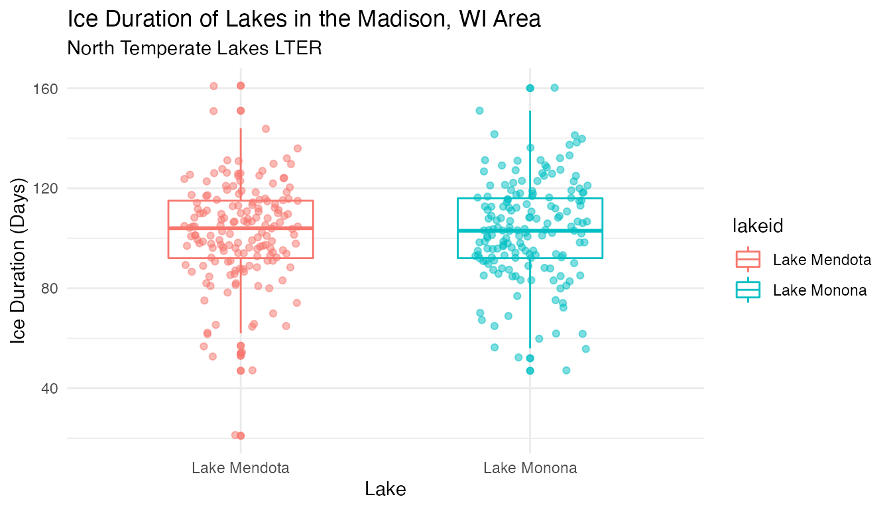
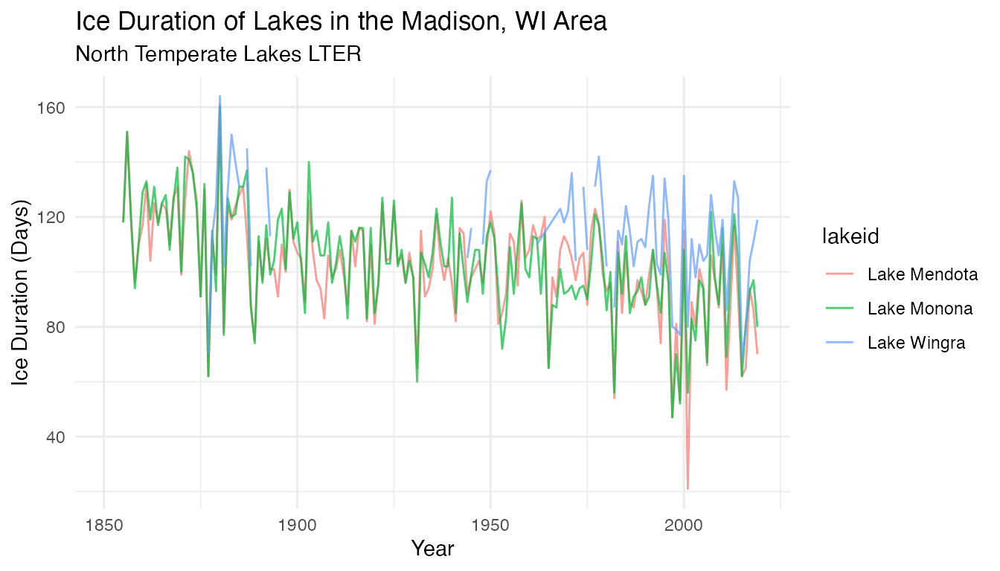
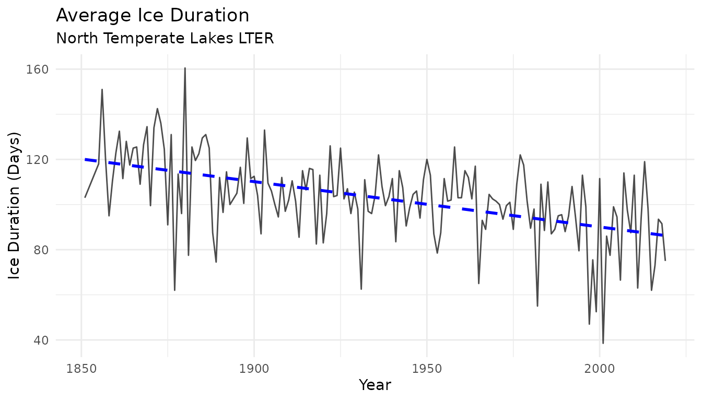
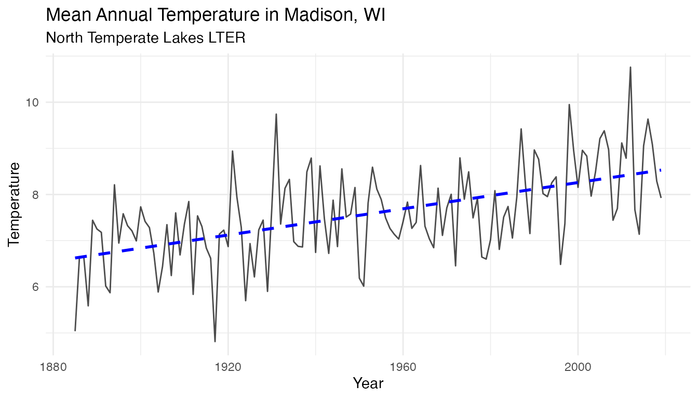
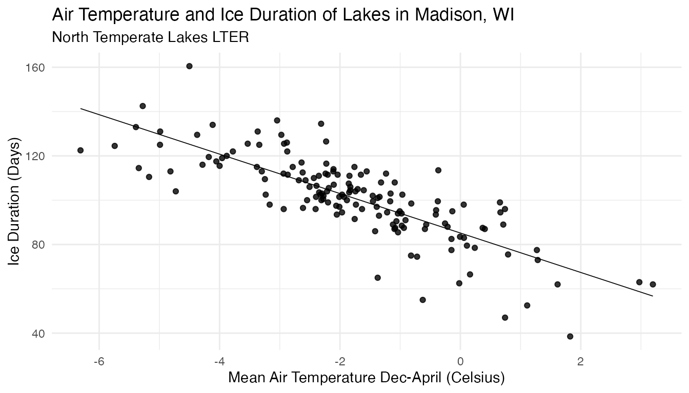
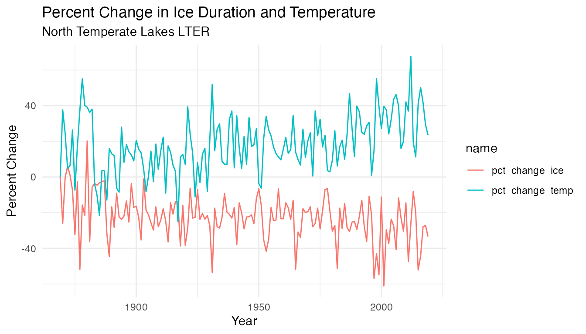

vignettes/ntl_icecover_vignette.Rmd
ntl_icecover_vignette.RmdAccording to the EPA, lake ice duration can be an indicator of climate change. This is because lake ice is dependent on several environmental factors, so changes in these factors will influence the formation of ice on top of lakes. As a result, the study and analysis of lake ice formation can inform scientists about how quickly the climate is changing, and are critical to minimizing disruptions to lake ecosystems. We can examine the ice duration of Lake Mendota, Lake Monona, and Lake Wingra, three lakes in the Madison, WI area.
head(ntl_icecover)
#> # A tibble: 6 × 5
#> lakeid ice_on ice_off ice_duration year
#> <fct> <date> <date> <dbl> <dbl>
#> 1 Lake Mendota NA 1853-04-05 NA 1852
#> 2 Lake Mendota 1853-12-27 NA NA 1853
#> 3 Lake Mendota 1855-12-18 1856-04-14 118 1855
#> 4 Lake Mendota 1856-12-06 1857-05-06 151 1856
#> 5 Lake Mendota 1857-11-25 1858-03-26 121 1857
#> 6 Lake Mendota 1858-12-08 1859-03-14 96 1858Note that the tidyverse also provides glimpse() for a quick view of a dataset:
glimpse(ntl_icecover)
#> Rows: 431
#> Columns: 5
#> $ lakeid <fct> Lake Mendota, Lake Mendota, Lake Mendota, Lake Mendota, L…
#> $ ice_on <date> NA, 1853-12-27, 1855-12-18, 1856-12-06, 1857-11-25, 1858…
#> $ ice_off <date> 1853-04-05, NA, 1856-04-14, 1857-05-06, 1858-03-26, 1859…
#> $ ice_duration <dbl> NA, NA, 118, 151, 121, 96, 110, 117, 132, 104, 125, 118, …
#> $ year <dbl> 1852, 1853, 1855, 1856, 1857, 1858, 1859, 1860, 1861, 186…Now let’s explore the data visually. We can explore the data distribution in the different lakes using a box plot
lake_ice <-
ggplot(data = ntl_icecover %>% filter(!is.na(ice_duration)), aes(x = lakeid, y = ice_duration)) +
geom_boxplot(aes(color = lakeid, shape = lakeid),
alpha = 0.8,
width = 0.5) +
theme_minimal() +
labs(
title = "Ice Duration of Lakes in the Madison, WI Area",
y = "Ice Duration (Days)",
x = "Lake",
subtitle = "North Temperate Lakes LTER"
) +
geom_jitter(
aes(color = lakeid),
alpha = 0.5,
show.legend = FALSE,
position = position_jitter(width = 0.2, seed = 0)
)
lake_ice
Now let’s have a look at the time-series across the different lakes:
ice_duration <-
ggplot(data = ntl_icecover, aes(x = year)) +
geom_line(aes(y = ice_duration, color = lakeid), alpha = 0.7) +
theme_minimal() +
labs(x = "Year", y = "Ice Duration (Days)", title = "Ice Duration of Lakes in the Madison, WI Area", subtitle = "North Temperate Lakes LTER")
ice_duration
Box plots and time series plots reveal similarities across the 3 lakes. What does the trend look like for average ice cover duration in the region, based on data for the 3 lakes here?
Boxplot (3-lake average):
ntl_icecover_avg <- ntl_icecover %>%
drop_na(ice_duration) %>%
group_by(year) %>%
summarise(ice_duration = mean(ice_duration)) %>%
rename(avg_ice_duration = ice_duration)
ntl_icecover_avg
#> # A tibble: 166 × 2
#> year avg_ice_duration
#> <dbl> <dbl>
#> 1 1851 103
#> 2 1855 118
#> 3 1856 151
#> 4 1857 120
#> 5 1858 95
#> 6 1859 110.
#> 7 1860 123
#> 8 1861 132.
#> 9 1862 112.
#> 10 1863 128
#> # … with 156 more rowsTime Series Plot:
avg_ice_duration <-
ggplot(data = ntl_icecover_avg %>% filter(!is.na(avg_ice_duration)), aes(x = year, y = avg_ice_duration)) +
geom_line(alpha = 0.7) +
theme_minimal() +
geom_smooth(
method = lm,
se = FALSE,
color = "blue",
linetype = "dashed"
) +
labs(y = "Ice Duration (Days)", x = "Year", title = "Average Ice Duration", subtitle = "North Temperate Lakes LTER")
avg_ice_duration
The average ice duration in Madison is decreasing. What environmental factors are influencing this change?
Research suggests that mean annual temperature is one of the primary factors that alter lake ice formation. We can look at the temperature data of Madison, WI found in ntl_airtemp to see if there is a corresponding change in climate that may have influenced the change in ice duration.
Note that according to the original metadata: “Daily temperature data prior to 1884 were estimated from 3 times per day sampling and biases are expected and should not be comparable with data after that time.”
head(ntl_airtemp)
#> # A tibble: 6 × 3
#> sampledate year ave_air_temp_adjusted
#> <date> <dbl> <dbl>
#> 1 1870-06-05 1870 20
#> 2 1870-06-06 1870 18.3
#> 3 1870-06-07 1870 17.5
#> 4 1870-06-09 1870 13.3
#> 5 1870-06-10 1870 13.9
#> 6 1870-06-11 1870 15Compute the mean annual temperature:
ntl_airtemp_avg <- ntl_airtemp %>%
group_by(year) %>%
summarise(ave_air_temp_adjusted = mean(ave_air_temp_adjusted))
ntl_airtemp_avg
#> # A tibble: 151 × 2
#> year ave_air_temp_adjusted
#> <dbl> <dbl>
#> 1 1869 6.42
#> 2 1870 8.83
#> 3 1871 7.99
#> 4 1872 6.72
#> 5 1873 6.83
#> 6 1874 8.11
#> 7 1875 5.94
#> 8 1876 7.53
#> 9 1877 8.81
#> 10 1878 9.95
#> # … with 141 more rowsTime Series Plot:
temp_plot <-
ggplot(data = ntl_airtemp_avg %>% filter(!is.na(ave_air_temp_adjusted)),
aes(x = year, y = ave_air_temp_adjusted)) +
geom_line(alpha = 0.7) +
theme_minimal() +
geom_smooth(
method = lm,
se = FALSE,
color = "blue",
linetype = "dashed"
) +
labs(y = "Temperature", x = "Year", title = "Mean Annual Temperature in Madison, WI", subtitle = "North Temperate Lakes LTER")
temp_plot
There seems to be a general upward trend in the mean annual temperature. As a result, there may be a relationship between temperature and ice duration.
To compare the ice cover and temperature data directly, the ntl_airtemp and ntl_icecover datasets can be joined. In this case, the datasets can be joined by the common year variable. Since there is one temperature for each year in ntl_airtemp_avg, each temperature will be mapped to the corresponding year in the joined table.
ntl_joined_avg <- ntl_icecover_avg %>%
left_join(by = "year", ntl_airtemp_avg)
ntl_joined_avg
#> # A tibble: 166 × 3
#> year avg_ice_duration ave_air_temp_adjusted
#> <dbl> <dbl> <dbl>
#> 1 1851 103 NA
#> 2 1855 118 NA
#> 3 1856 151 NA
#> 4 1857 120 NA
#> 5 1858 95 NA
#> 6 1859 110. NA
#> 7 1860 123 NA
#> 8 1861 132. NA
#> 9 1862 112. NA
#> 10 1863 128 NA
#> # … with 156 more rowsPlot the average air temperature against the average ice cover duration:
scatter <-
ggplot(data = ntl_joined_avg %>%
filter(!is.na(ave_air_temp_adjusted) &
!is.na(ice_duration)),
aes(y = avg_ice_duration, x = ave_air_temp_adjusted)) + geom_point(alpha = 0.8) +
theme_minimal() +
labs(
title = "Air Temperature and Ice Duration of Lakes in Madison, WI",
y = "Ice Duration (Days)",
x = "Temperature (Celsius)",
subtitle = "North Temperate Lakes LTER"
) +
geom_smooth(
method = "lm",
color = "black",
se = FALSE,
size = 0.3
)
scatter
It appears that there is a negative correlation between the mean annual temperature and the amount of time that each lake was frozen. This means that as temperature increases, the ice duration decreases.
To compare the temperature with the ice duration on a time-series plot, calculate the percent change in ice duration and temperature from the earliest data point for both variables. The earliest year of observation for ice duration was 1851, and the earliest year of observation for temperature was 1869. These values can be determined from the ntl_icecover_avg and ntl_airtemp_avg values calculated earlier. First, join the full dataset with the average ice duration data that we calculated earlier, and then add new columns containing the calculated percent changes.
# Remove data prior to 1868
ntl_joined_avg <- ntl_joined_avg %>%
filter(year > 1868)
# Calculate the percent change
pct_change <- ntl_joined_avg %>%
mutate(
pct_change_ice = (avg_ice_duration / first(avg_ice_duration) - 1) * 100,
pct_change_temp = (ave_air_temp_adjusted / first(ave_air_temp_adjusted) - 1) * 100
) Then plot a time series to compare the magnitude in changes in temperature and ice duration. Use the pivot_longer function so that both lines can easily be plotted on the same axes.
comparison_df <- pct_change %>%
select(year, pct_change_temp, pct_change_ice) %>%
pivot_longer(cols = c(pct_change_ice, pct_change_temp)) Time Series Plot:
comparison_plot <-
ggplot(data = comparison_df ,
aes(x = year, y = value, color = name)) +
geom_line() +
theme_minimal() +
labs(x = "Year", y = "Percent Change", title = "Percent Change in Ice Duration and Temperature (from 1859 values)", subtitle = "North Temperate Lakes LTER")
comparison_plot
It appears that the change in ice somewhat mirrors the change in temperature each year, as several spikes in temperature have a corresponding dip in ice duration. This may indicate a relationship between the two variables that would be worth further investigation.
Anderson, L. and D. Robertson. 2020. Madison Wisconsin Daily Meteorological Data 1869 - current ver 32. Environmental Data Initiative. https://doi.org/10.6073/pasta/e3ff85971d817e9898bb8a83fb4c3a8b (Accessed 2021-03-08).
Magnuson, J.J., S.R. Carpenter, and E.H. Stanley. 2021. North Temperate Lakes LTER: Ice Duration - Madison Lakes Area 1853 - current ver 35. Environmental Data Initiative. https://doi.org/10.6073/pasta/ab31f2489ee436beb73fc8f1d0213d97 (Accessed 2021-03-08).
library(usethis)
library(metajam)
library(tidyverse)
library(janitor)
# North Temperate Lakes LTER: Ice Duration - Madison Lakes Area 1853 - current
# Main URL: https://portal.edirepository.org/nis/mapbrowse?scope=knb-lter-ntl&identifier=33&revision=35
# Save link location for the data package:
ntl_url <-
"https://portal.edirepository.org/nis/dataviewer?packageid=knb-lter-ntl.33.35&entityid=f5bc02452cafcd461c49bd7429d8b40c"
# Download the data package with metajam
ntl_download <-
download_d1_data(data_url = ntl_url, path = tempdir())
# Read in data
ntl_files <- read_d1_files(ntl_download)
ntl_ice_raw <- ntl_files$data
# Basic cleaning
ntl_icecover <- ntl_ice_raw %>%
select(-iceon, -iceoff, -season) %>%
rename(year = year4) %>%
mutate(
lakeid = recode(
lakeid,
"ME" = "Lake Mendota",
"MO" = "Lake Monona",
"WI" = "Lake Wingra"
),
year = as.numeric(year),
ice_duration = as.numeric(ice_duration),
ice_on = as.Date(ice_on),
ice_off = as.Date(ice_off),
lakeid = as.factor(lakeid),
ice_duration = replace(ice_duration, which(ice_duration < 0), NA) # change values of -999 to NA
) %>%
clean_names() # makes headers formatting more consistent
library(usethis)
library(metajam)
library(tidyverse)
library(janitor)
# Madison Wisconsin Daily Meteorological Data 1869 - current
# Main URL: https://portal.edirepository.org/nis/mapbrowse?packageid=knb-lter-ntl.20.32
ntl_temps_url <-
"https://portal.edirepository.org/nis/dataviewer?packageid=knb-lter-ntl.20.32&entityid=3c7ddd692d3ac8e90bf2954a16b39e89"
# Download the data package with metajam
ntl_temps_download <-
download_d1_data(data_url = ntl_temps_url, path = tempdir())
# Read in data
ntl_temps_files <- read_d1_files(ntl_temps_download)
ntl_temps_raw <- ntl_temps_files$data
# Basic cleaning
ntl_airtemp <- ntl_temps_raw %>%
select(sampledate, year4, ave_air_temp_adjusted) %>%
rename(year = year4) %>%
clean_names()